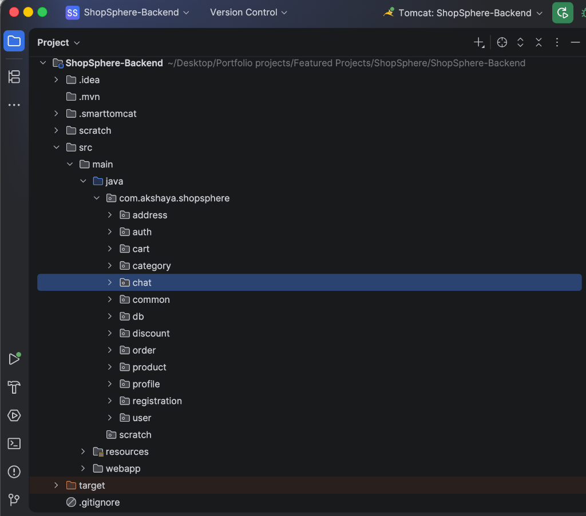

// 3-Tier Architecture Contract (Servlet -> Service -> Repository)
public class UserAuthFilter implements Filter {
public void doFilter(ServletRequest req, ServletResponse res, FilterChain chain) {
String token = extractJwt(httpRequest);
UserContext context = jwtProvider.validateAndExtract(token);
// Stateless ThreadLocal Context Mounting
CurrentUser.set(context);
try {
chain.doFilter(req, res);
} finally {
// Mandatory eviction prevents ThreadLocal leaks across pool threads
CurrentUser.clear();
}
}
}Slide 1 of 5 • Core Foundation
3-Tier Architecture & Thread-Safety
16 Raw Servlets
Zero Frameworks
ThreadLocal Context
HikariCP
-
1
Framework-Free 3-Tier Architecture: Built with 16 raw `HttpServlet` dispatchers without Spring Boot overhead, separated across clean `Servlet -> Service -> Repository` boundaries with explicit Java interfaces (`ICartRepository`, `IAddressRepository`).
-
2
Stateless ThreadLocal Context: `UserAuthFilter` mounts a `UserContext` onto a `ThreadLocal` per HTTP request, featuring a mandatory `finally { CurrentUser.clear(); }` clause to eliminate multi-tenant context leakage across HikariCP worker threads.
-
3
High-Throughput Connection Pooling: HikariCP connection pool integration with PostgreSQL prevents database connection starvation and handles burst traffic efficiently.
ThreadLocal<UserContext> CurrentUser
Thread-Safe Context